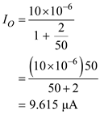

Refer to Figure 7.28 in the textbook for the basic bipolar current mirror.
(a)
The voltage  is,
is,
When , the base-emitter voltage is.
Refer to Figure 7.28 in the textbook for the basic bipolar current mirror.
(a)
The voltage is,
When , the base-emitter voltage is.
When , the base-emitter voltage  is,
is,
Therefore, the range of  corresponding to
corresponding to  increasing from
increasing from  is,
is,
.
Since,  is very high,
is very high,  is negligible, then the output current is,
is negligible, then the output current is,
Therefore, the range of  corresponding to
corresponding to  increasing from is,
increasing from is,
.
(b)
For  remains constant, the output current is,
remains constant, the output current is,
When , the output current is,

Thus, the output current at  is, .
is, .
When , the output current is,
Thus, the output current at is, .
When , the output current is,
Thus, the output current at  is, .
is, .
 , the output current is,
, the output current is,
Thus, the output current at is, .
Therefore, the range of  corresponding to
corresponding to  increasing from
increasing from  is,
is,
.